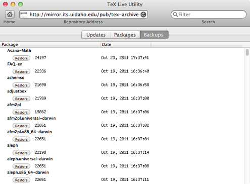
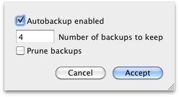

Backup
TeX Live Manager will automatically save backups for you. When it updates a package, the previous version of that package is archived, so you can revert to an older version of it easily.
When you need to revert to an older version, click the Restore button next to its version number and install date.

To configure automatic backups, use the Configure menu. 
If the Autobackup enabled box is checked, the number of previous versions to save (per package) can be set below. To keep all previous versions, enter ∞ (opt-5 on US keyboards).
If the Prune backups box is checked, the number of backups (per package) will be pruned to your maximum value when you dismiss the sheet by choosing Accept.
With a system as complex as TeX Live, fully testing all packages for compatibility is practically impossible. Additionally, sometimes a package author overlooks a bug before submitting an update to CTAN, and it may take a few days (or longer) to get fixed. Automatic backups can help you meet deadlines and avoid tedious manual package restoration or fixes.
Although we recommend that you keep backups enabled, old packages can use significant amounts of disk space on today's smaller SSD drives, so you may wish to limit the number of backups.
You can find out how much space is being used by TeX Live backups using the following command in Terminal.app: du -sk $(kpsewhich -var-value=SELFAUTOPARENT)/$(tlmgr option backupdir |cut -d ":" -f 2 |sed -e 's/^ //g'), which reports size in kilobytes.